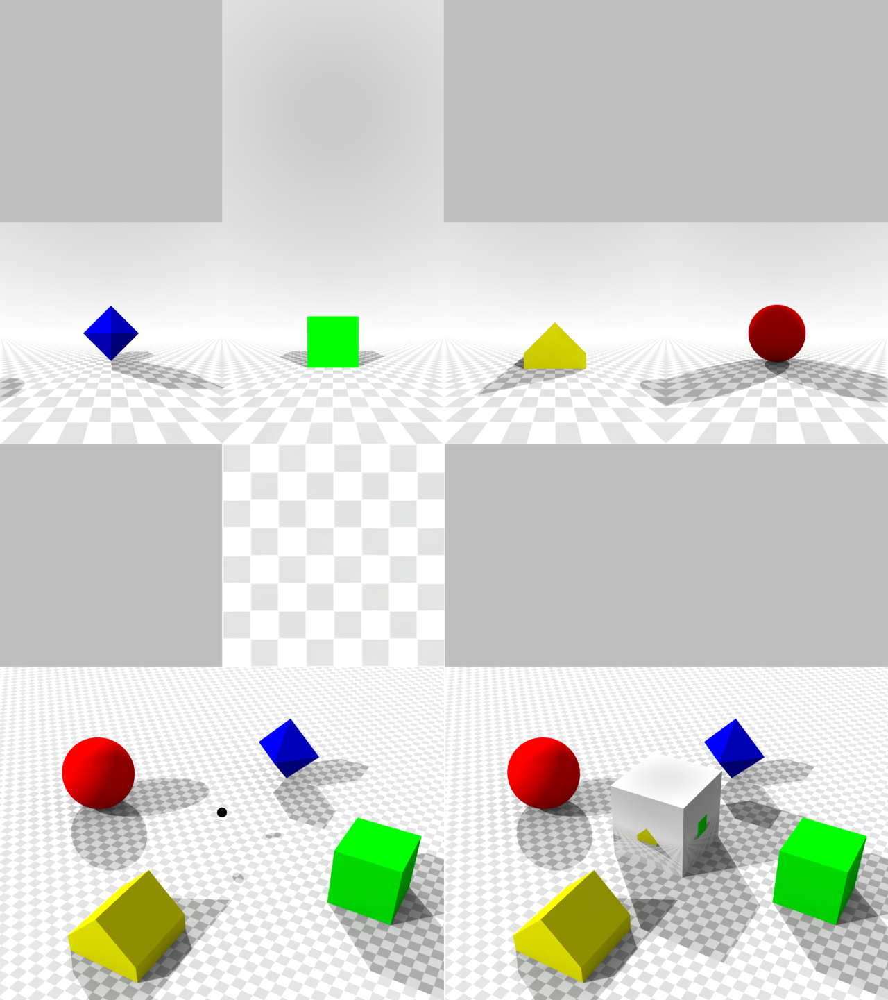
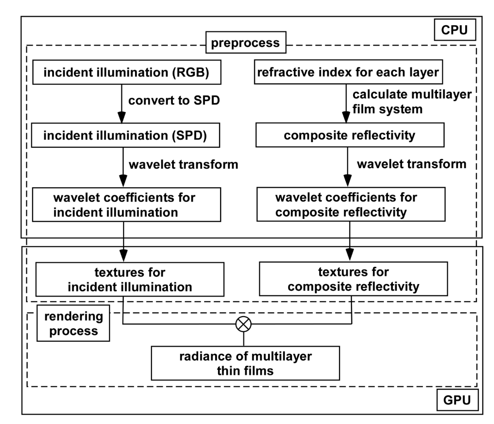
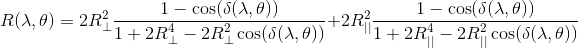
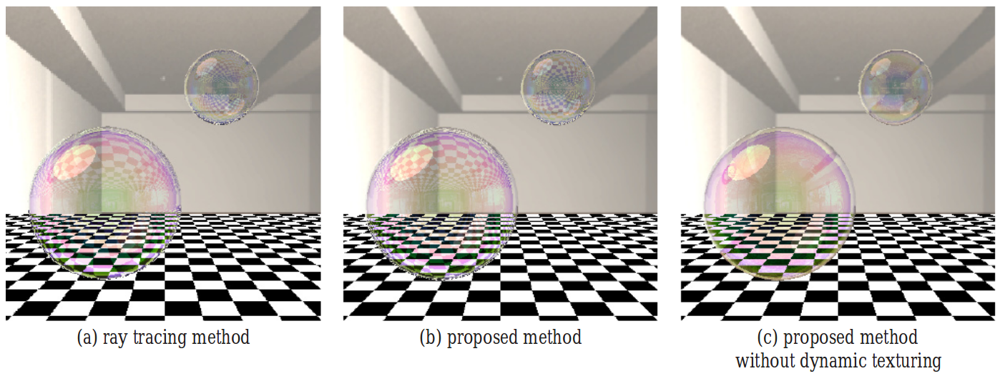

Glass is the most common type of transparent material we see in our everyday lives. Physically, we can model glass' transparency properties with simple mathematical equations.
Basic Properties of Geometric Light
In its most basic form, light can be modelled geometrically as rays. These rays
follow Fermat's principle of least time, which states that the path traversed by
a ray of light between two points will always take the least amount of time
possible. This causes effects such as refraction, where the speed of light is
different in different media. For example, air, glass and water all have
different speeds of light, which causes the effect seen in figure 1.
Light modelled this way can be given certain properties. A ray has luminous intensity, which is the amount of energy it contains, and polarization. A ray of light is the interaction of the electric and magnetic field, and the way these fields are oriented determines its polarization. This can be seen in figure 2.
When interacting with a boundary, two more planes can be defined: the plane of incidence, which is the plane in which the light ray lies in, before and after the interaction, and the plane of reflection, which is parallel to the surface of the boundary of the media.
Law of Reflection
The law of reflection states that the angle of reflection of a ray of light is
always equal to the angle of incidence of that ray with respect to the normal to
the plane of reflectance.
Snell's Law
Snell's law simply states that the ratio of the sines of the angles of incidence
and refraction is equal to that of the refractive index of the materials. The
refractive index (n) is simply the ratio of the speed of light in the medium to
the speed of light in a vacuum.
A special case of Snell's law is that of total internal reflection. If the refractive index of the other medium is less than the index of the current one, it is possible to solve for the angle of incidence when the angle of transmission is 90°. This is known as the critical angle, and when the angle of incidence is higher, the angle of transmission will be greater than 90° and hence reflect back into the medium.
Furthermore, the refractive index is different for different wavelengths of light. This results in red light being refracted less than indigo, as seen in figure 4.
Fresnel Equations
As light passes through a transparent object, three things happen: transmission,
absorption and reflectance. Fresnel Equations describe how the light interacts
with the boundary of materials and how light is reflected and transmitted.
Fresnel equations are defined by two special cases: when the polarization light
is such that the electric field is perpendicular to the plane of incidence, and
when it is parallel to the plane of incidence. When it is perpendicular, it is
called s-polarized, and when it is parallel it is p-polarized.
The behavior of light passing through a boundary depends on whether it is s-polarized or p-polarized. We can use the following equations to determine the fraction of incident power reflected, and with the conservation of energy, the fraction of incident power transmitted.
The angle θi is the angle of incident light, θt is the angle of transmitted light and θr is the angle of reflected light, linked by Snell's law and the law of reflection. The fraction of power transmitted is simply one minus Rs or Rp. If the incident light is unpolarized, the fraction of the reflected light is the average of that of the s-polarized and p-polarized light.
These equations describe the fundamental behaviour of light at a boundary. This is why in figure 4 you can see light being reflected off the transparent surface of the prism, as well as why you can see both your reflection and through a pane of glass. These equations are taken into accounts in BSDF.
BSDF
The Bidirectional Scattering Distribution Function (BSDF) is the combination of
the Bidirectional Reflective Distribution Function (BRDF) and the Bidirectional
Transmission Distribution Function (BTDF) and describes how a ray of light is
scattered upon entering a transparent medium and after exiting the medium.
The radiance of a light source is the power per steradian1 per meter squared emitted from the source. Both the BRDF and BTDF are four-dimensional functions that take the incoming and outgoing light directions and return the fraction of radiant light that remains after the reflection. (The incoming and outgoing light directions are characterized by two angles, the azimuth2 angle and the zenith3 angle, illustrated in figure 5.)
BRDF on transparent surfaces is no different from opaque ones; using the Fresnel Equations earlier we can compute the physically expected fraction of reflected light, and incorporate this into the BRDF. The BRDF can also contain information about the scattering of light at the surface, as seen in figure 6. Physically, this is due to the surface imperfections.
BTDF describes how the light is transmitted either through the material or after it has exited the material. In the real world, light is lost within the medium due to the light interacting with particles and scattering, as well as total internal reflection, where the light does not exit the medium. However, this is computationally taxing, so this is simplified by having the BTDF model it when the light exits the medium. Snell's law can be incorporated into both the BRDF and BTDF to model the total internal reflection when the zenithal angle is beyond the critical angle.
In practice, realistic BRDFs and BTDFs are almost always measured through sampling. While some early models are purely mathematical, recently sampled BSDFs tend to be more realistic. Different measurements of radiance are taken by a light sensor with different light directions on a particular surface, and the functions are then interpolated. A setup as in figure 7 is used in taking these measurements.
Furthermore, the BSDF can be extended to a five-dimensional function, taking the same arguments as before plus another for wavelength of light. This adds further realism, as different wavelengths of light refract at different angles.
Pros of BSDF
It is Realistic - measurements are taken physically, hence tend to be more close to real life than a purely mathematical model. Furthermore, the model's transparency can be better than a mathematical model, as it takes into account light losses and surface scattering. Lastly it can be used in Real-Time.
Cons of BSDF
It is time-consuming to measure - since many measurements must be made, eg. angle of incidence and reflection/transmission, radiance of incoming and outgoing light, it is time-consuming to get samples for a BSDF. Special equipment such as a spherical gantry must also be used. Furthemore, it does not account for subsurface scattering and can be computationally intensive.
Glossary
Steradian: the SI unit for solid angle, the three-dimensional analogue of angle.
Azimuth: the angle measured from a certain direction along an assigned ‘ground
plane'
Zenith: the angle measured from the normal of the ground plane to the object
Bibliography
Snell's Law. (n.d.). Retrieved March 15, 2018, from http://www.physicsclassroom.com/class/refrn/Lesson-2/Snell-s-Law
Paschotta, D. R. (2017, October 23). Fresnel Equations. Retrieved March 15,
2018, from https://www.rp-photonics.com/fresnel_equations.html
Fresnel Equations -- from Eric Weisstein's World of Physics. (n.d.). Retrieved
March 15, 2018, from http://scienceworld.wolfram.com/physics/FresnelEquations.html
F O Bartell, E. L. Dereniak, W. L Wolfe, "The Theory And Measurement Of
Bidirectional Reflectance Distribution Function (Brdf) And Bidirectional
Transmittance Distribution Function (BTDF)", Proc. SPIE 0257, Radiation
Scattering in Optical Systems, (3 March 1981); doi: 10.1117/12.959611; https://doi.org/10.1117/12.959611
Shell, J. (2004). Bidirectional Reflectance: An Overview with Remote Sensing
Applications & Measurement Recommendations. [ebook] New York: Rochester
Institute of Technology. Available at: http://web.gps.caltech.edu/~vijay/Papers/BRDF/shell-04.pdf
[Accessed 15 Mar. 2018].
Matsapey, Natalia & Faucheu, Jenny & Flury, Manuel & Delafosse, David. (2013).
Design of a gonio-spectro-photometer for optical characterization of
gonio-apparent materials. Measurement Science and Technology. 24. 065901.
10.1088/0957-0233/24/6/065901.
Image Credit
Figure 1: Duke University
Figure 2: Georgia State University
Figure 3: www.scratchapixel.com
Figure 4: http://blogs.nature.com/ofschemesandmemes/2015/02/19/theory-of-light-and-colours
Figure 5: Edit of image from http://solarproductspro.com/solar-102-solar-definition/
Figure 6: Jurohi, https://en.wikipedia.org/wiki/File:BSDF05_800.png
Figure 7: Matsapey, Natalia & Faucheu, Jenny & Flury, Manuel & Delafosse, David.
Figure 8: http://manual.cycles4d.net/html/shaders_glassbsdf.htm
Additional complexities arise when considering materials with a non-uniform structure. Smoke is one such example, wherein the constant changing of its volumetric structure and density generate shifting light absorption and scattering interactions. An accurate, real-time rendition of smoke thus needs to track multiple properties that govern the behavior of smoke, and subsequently generate visuals with minimal computational overhead.
The Navier Stokes Equation
While smoke is in fact a composite of
solids, liquids and
gases, it is most easily modelled as a gaseous fluid. Its behavior is thus
controlled by the Navier
Stokes equations, that describe the motion of viscous fluid substances.
The Navier Stokes Equations are a statement of F=ma for inviscid fluids. By taking into account forces due to gravity, pressure and viscosity of the fluid, we can determine its acceleration. Thus, this helps us determine the behavior of smoke under different forces, setting the scene up for rendering approximation methods such as Blob Warping.
Blob Warping
A direct rendering of smoke, as a collection of millions
of tiny particles,
would require prohibitive levels of computation. Instead, knowledge of the
Navier Stokes equations
allow us to use Blob Warping, the process by which we generalize the collective
motion of many
particles as single blobs. This greatly speeds up the smoke simulation.
How the blobs change are determined by a smoothing function. Based on the attributes of the blob relevant to the Navier Stokes equation, as well as the wind field, we can compute the displacement and diffusement of the blob. This cumulative behavior of the blobs provides a good approximation of smoke motion.
Like real smoke, blobs in a simulation can intersect one another as they move. The extent of superposition of blobs determine the density of smoke particles in a given area. Blob Warping thus outputs volumetric density fields mimicking smoke movement, which we later use in Compensated Ray Marching to determine the visual appearance of the smoke.
Pros of Blob Warping
Is highly applicable to developers and animators due to its versatility; parameters such as wind fields can be used to produce different blob dispersal behavior. It can even be used to model fire and its subsequent transition to smoke, given that the Navier Stokes Equation also relies upon temperature as a factor.
Cons of Blob Warping
Blob Warping does not really address properties such as coloration and lighting effects. These have to be left to subsequent techniques.
Multiple Scattering Theory
The interactions of light with dense
clusters of particles, such
as that in smoke, are governed by Multiple Scattering Theory. This theory
formulates the light
propagation through scattering fields.
The formula describes the interaction of an electron with a cluster of atoms with nuclei at different positions. Each atom has a scattering matrix, that cumulatively alter the incoming wave of light into its outgoing wave.
Unfortunately, implementing this directly into a rendering algorithm is excessively complex, given it works on an atomic level. Instead, we will seek to approximate the behavior of light interacting with particles in a cloud of smoke using Compensated Ray Marching, a process that uses Single Scattering to derive Multiple Scattering, whilst retaining the quality of the output.
Compensated Ray Marching
This is the method by which we attain
visuals/lighting on the
smoke in real-time. In sum, it evaluates source radiance at certain points due
to Single and
Multiple Scattering. These are added together and interpolated to produce
approximate radiances at
all points in the smoke. It then evaluates the outgoing radiance from the points
via Ray Marching.
A more detailed explanation of the method is as follows. Firstly, it takes a sequence of volume density fields representing the smoke as inputs. This could easily derived from processes such as Blob Warping.
Secondly, it takes a low frequency light RBF approximation of the density fields. An RBF approximation is a process by which volume density fields are abstracted into spherical shapes, each with their own radial center. It also stores the high frequency light that was not captured in the approximation as a residual.
Thirdly, we aim to derive the total source radiance at every point in the simulation with minimal calculations. This is achieved by calculating at each RBF center the effect of Single Scattering- the visual effect of light when it has been distorted by a single object. This is then used to generate the Multiple Scattering model at each RBF center. We then add them together to get the total radiance at each RBF center. We then interpolate the results such that the total radiance across each point in the smoke can be derived. This is far less computationally intensive than directly calculating Multiple Scattering across each point in the smoke.
Fourthly, Ray-Marching, a process that will be elaborated on later, is used to evaluate the outgoing radiance. The last step is to add in the previously stored residual, that significantly increases the level of detail in the final image.
Pros of Compensated Ray Marching
It greatly reduces computation required, allowing us to calculate Multiple Scattering in real-time. Furthermore, it is highly applicable in the real world to animators and developers. This is because the algorithm is versatile, allowing for changes in fields such as Albedo and the smoke's extinction to produce unique smoke effects.
Cons of Compensated Ray Marching
Unfortunately, as this method was developed for rendering smoke under low frequency light, it faces difficulty when the majority of the light is high frequency. Most of the light would end up stored in the residue, as opposed to being used in the RBF approximations. Furthermore, it may not be necessary to use this technique in cases where smoke is thinly dispersed, as there is mainly Single Scattering.
Ray Marching
While Single and Multiple Scattering have determined the
effect of light on
smoke, we have yet to determine the color of the smoke, particularly after the
effects of depth and
distance have been considered. Ray Marching is thus the process by which a ray
of cast into the
smoke in order to determine the color of it and its surroundings.
As 3D rendering is the art of capturing a 3D environment on a 2D plane, Ray Marching begins from this nearest plane, casting a ray outwards. This ray takes steps- of either constant or dynamic lengths- forward, repeating until it reaches the surface of the model. This produces the exact distance between the plane and the object's surface. The colour of the object, that is a function of this distance, can thus be computed. Furthermore, data from each step taken is used to shade areas prior to hitting that object's surface.
Pros of Ray Marching
Often enough, Ray Marching can produce results extremely similar to offline methods like Ray Tracing, with far less computation and an easier implementation
Cons of Ray Marching
Depending on the distance one walks per step, it is possible that the algorithm turns out far less precise than Ray Tracing. As Ray Marching can only detect the presence of objects should one step be inside it, and another outside it, taking overly large steps can cause the method to overlook objects prior to hitting the targeted surface.
Bibliography
J Stam, (1995). Depicting Fire and Other Gaseous Phenomena Using Diffusion Processes, from http://citeseerx.ist.psu.edu/viewdoc/download;jsessionid=26135E10D7ACED8A8A4389A79131F064?doi=10.1.1.34.7431&rep=rep1&type=pdf
B. Ravel, (2005, September 29). A Practical Introduction to Multiple Scattering Theory, from https://ac.els-cdn.com/S0925838805003658/1-s2.0-S0925838805003658-main.pdf?_tid=18ad457a-29b9-46bf-8494-
K Zhou, (2007, September 1). Real-Time Smoke Rendering using Compensated Ray Marching, from https://dl.acm.org/citation.cfm?id=1360635
E Rune, (2012, February 28). Real-Time Scattering, from http://www2.imm.dtu.dk/pubdb/views/edoc_download.php/6267/pdf/imm6267.pdf
Volumetric Rendering: RayMarching, from https://www.alanzucconi.com/2016/07/01/raymarching/
On Ray Casting, Ray Tracing, Ray Marching and the Like, from http://www.hugi.scene.org/online/hugi37/hugi%2037%20-%20coding%20adok%20on%20ray%20casting,%20ray%20tracing,%20ray%20marching%20and%20the%20like.htm
Image Credit
Figure 1: Description of the Navier Stokes Equation
Figure 2: Blob Warping from "A Practical Introduction to Multiple Scattering Theory"
Figure 3: https://en.wikipedia.org/wiki/Multiple_scattering_theory
Figure 4: Breakdown to residue and RBF Approximations from "Real-Time Smoke Rendering using Compensated Ray Marching"
Figure 5: Combining the Effects of Scattering from "Real-Time Smoke Rendering using Compensated Ray Marching"
Figure 6: Ray Marching Distance Fields: Concepts and Implementation in Unity, http://flafla2.github.io/2016/10/01/raymarching.html
Rendering water realistically is often considered one of the biggest challenges for real-time rendering. The difficulties arise from the fact that, unless the water is perfectly still which is rarely the case, water need to be rendered dynamically so its geometry and texture need to be updated every frame. There is also a lot of variation in the scale of water that need to be rendered, ranging from a small glass of water to the ocean that spans the horizons. On top of that, the appearance of water is largely determined by the physical reflection and refraction of light which changes depending on the angles of the camera, the light source and the normal of the dynamic surface. This means that rendering realistic looking water is highly computationally intensive, though for non-real-time applications, such as in movies and simulations, it is possible to achieve photorealistic renders using physics-based methods.
Water both reflect light on its surface and refract light that passed through it. Calm water surfaces act as a near perfect specular reflector, which has the same angle of incidence and angle of reflection. This is to be contrasted with a diffuse reflector which scatters the light at many angles. (Russell, 2015) The amount of light reflected can be calculated using Fresnel Equations covered in the Glass section. Viewed from perpendicular to the surface the water reflects only a small amount of incoming light. However, at glancing angles (viewed from a very shallow angle) the water surface acts as a perfect mirror and almost all lights are reflected, causing specular and bright areas.
Colour
The colour and behaviour of a large body of water is largely defined by its depth and location. For example, rendering deep water and shallow water require very different techniques and therefore utilises different shaders. The rendering of the colour of the water is split into tow parts: the colour of the surface and the colour of the water volume. One efficient, though non-physics-based way of rendering the surface is to use the Phong reflection model (Phong shading). It computes the final image as the combination of the ambient reflection across the whole object, diffuse reflection of rough surfaces and the specular reflection of shiny surfaces.
Although small quantity of water appears to be colourless, pure water has an intrinsic blue colour due to the selective absorption of white light in the red part of the visible spectrum, scattering back blue which is the complementary colour of red. Most materials' colour come from interactions between light and electrons of the molecules such as absorption, stimulated emission and selective reflection. Water, on the other hand, is the only known natural material which owes its colour from vibrational transitions of the nuclei of the molecules, when the absorbed photons promote transitions to higher overtone and combination states of the nuclear motions. This effect increases with the depth of the water, resulting in a darker shade of blue the deeper the water is.
Caustics
Caustics results from the reflection and refraction of light from the curved surface of water, focusing the light to certain area of the receiving area. This effect can be easily seen at the bottom of a fish tank or swimming pool.
It is possible to render photorealistic caustics using ray tracing but without modifications it is not easy to render at an interactive frame rate. In simulations and non-real time renderings caustics are usually rendered using forward or backward ray tracing. In forward ray tracing, photons are emitted from light sources and tracked through the scene until they are completely absorbed by objects. This is very inefficient for just creating caustics as most of the photons tracked would never hit the bottom of the water.
A slight improvement on that is backward ray tracing which work in the opposite direction. Photons are emitted from the receiving point in all directions over the hemisphere and traced back to the light sources. Photons that hit other objects are discarded and those that hit the surface of the water have their direction calculated using the reverse of the Snell's Law. As explained earlier, the intensity of the pseudo-photons decreases the further thy travel in water. The resulting light hitting the light sauce is finally summed using Monte Carlo sampling to determine the brightness of the starting point. However, this method is still very costly as only about 1 in 5 photons end up being useful.
The backward Monte Carlo method can be optimised for rendering of large body of water, such as lakes and the ocean, by reducing the angle of the upwards projection cone. About 20 percent of light is absorbed per meter of water travelled, so in relatively deep water only light coming from directly above need to be considered as most light coming in from an angle would be absorbed and does not contribute much to the caustics.
For scenes lit by the Sun, further approximation can be used to calculate the intensity of the light hitting the ocean surface. Since the sun can be approximated to be infinitely far away from the surface, the intensity can be calculated using solely the angle of the ray and the upwards normal without tracing it back to the sun light source.
Bibliography
1. Darles, E., Crespin, B., Ghazanfarpour, D. & Gonzato, J. C., 2010. A Survey of Ocean Simulation and Rendering Techniques.
2. Johnson, C., 2004. Real-time Water Rendering.
3. Charles L. Braun, S. N. S., n.d. Why is Water Blue?. Journal of Chemical Education, pp. 612 - 614.
4. GPU Gems - Chapter 2. Rendering Water Caustics [Accessed 14 03 2018]
http://developer.download.nvidia.com/books/HTML/gpugems/gpugems_ch02.html
5. Russell, J., 2015. Basic Theory of Physically-Based Rendering | Marmoset
[Accessed 11 03 2018]
https://www.marmoset.co/posts/basic-theory-of-physically-based-rendering
Image Credit
Figure 1. By Brad Smith [GFDL (http://www.gnu.org/copyleft/fdl.html) or CC-BY-SA-3.0 (http://creativecommons.org/licenses/by-sa/3.0/)], via Wikimedia Commons https://commons.wikimedia.org/wiki/File%3APhong_components_version_4.png
Figure 3. Understanding caustics for a higher level of realism in your renders | Pluralsight
https://www.pluralsight.com/blog/film-games/understanding-caustics-higher-level-realism-renders
Figure 4. By Henrik (Own work) [GFDL (http://www.gnu.org/copyleft/fdl.html) or CC BY-SA 4.0-3.0-2.5-2.0-1.0 (https://creativecommons.org/licenses/by-sa/4.0-3.0-2.5-2.0-1.0)], via Wikimedia Commons
https://commons.wikimedia.org/wiki/File%3ARay_trace_diagram.svg
Bubbles are a unique item to render in computer graphics as they are an object
that reflects and
refracts light at a very basic level while being spherical.
This is due to the bubbles (e.g. soap bubbles) having a thickness of only a
couple of hundred
nanometres. This thickness is similar to that of visible light and so
interference of the light
occurs, causing fringes. Also, the bubble's surface is a multi-layered film and
so complexities
arise when light interacts with it.
Standard methods of rendering bubbles using ray tracing provides maximum quality
but it is not at
all feasible in real-time rendering as it is a highly costly procedure. CPUs and
GPUs aren't
designed to use ray tracing effectively and so it is left to rendering objects
in such productions
as films or pre-rendered footage.
Below I will outline two different methods of trying to render bubbles
efficiently. These end up
being somewhat combined together as the first method incorporates the second to
some extent. But
first I will cover some of the techniques used in the methods to help with
clarification.
MainHaar Wavelets
Haar wavelets are a series of rescaled "square-shaped" functions which end up forming a wavelet family. Using a Haar matrix and a Haar transformation you are capable of compressing images in situations such as with modern cameras by representing each pixel with a single position in the matrix (assuming the matrix is a size that is a power of 2).
No multiplication is required for Haar transformations ot take place adn so they are very useful in terms of computational power. If you combine this efficiency with the many cores of a GPU you get real-time rendering done well.
You can also use a system by which you treat the films as 1 single input-output system where the composite reflectivity and transmissivity is calculated from the thickness of each layer, the composivity of each layer and the refractive index.Cube Mapping
Cube mapping is where you have your object (in our case a bubble) and you shine light rays out of it in such a way that you form a cube picture defined by a 90 degree view frustrum. This renders the image 6 times over from each viewpoint, forming this cube. The photo below demonstrates this well:

Cube mapping is used as it is capable of producing similar results to ray tracing, moderate quality reduction, with large gains in efficiency.
Cube mapping takes into account the entire resolution of the image and so no distortion or warping occurs (as did with the outdated method of sphere mapping). The seams have been known to cause problems in the past but algorthims have been created to tackle this problem smoothly to result in a seamless reflection.
The only real downside is when new objects are introduced a new cube map has to be generated to take into account the new reflections.
Pros/ConsSpectral Power Distributions and Haar Wavelets
When rendering objects with multilayer films you need to integrate the product of the spectral power distributions (SPDs) of the composite reflectivity, the incident light and the colour matching function.
This data obtained is vast and so the traditional computational power needed is large to render multilayer film objects.
However, we are able to project the SPD onto Haar Wavelets for computational cost reasons mentioned above - this accelerates the calculation nicely. As with cube mapping, rendering these thin films using a GPU stores the sampled SPD data as textures.

- The incident illumination is represented by a cube map.
- The RGB in the environment map is converted to SPD.
- The converted SPDs are projected onto Haar wavelets and represented by the Haar coefficient.
- Calculate teh composite reflectivity from a multilayer system.
- Then the product of the colour matching function and composite reflectivity is projected onto wavelets and represented again.
You take the calculated wavelet coefficients of incident radiance and the product of the composite reflectivity and colour matching function to produce the radiance at the multilayer thin film.
With the gpu implementation you can store the RGBA components as 8 wavelet coefficients inside of 2 cube map textures.Use of Cube Mapping for Rendering
In this method the reflectivities are stored in advance as textures for later and the rendering of objects reflected at the bubble surface is performed using the dynamic cubical environment map (mentioned above).
When it comes to rendering bubbles a dynamic cube map has to be used so as to obtain a true representation of the reflection is observed as the bubble moves in the object space. Using a static reflection is possible and will definitely use less computation power but it will not give as accurate of a representation of the scene (this is down to personal preference of the viewer though).
The simulation of bubble dynamics is based on the Duricovic model where the surface of the bubble is represented as triangular meshes and the vertices are treated as particles.
Using the following motion equation the dynamics of the bubble can be solved and computed: mixi`` = Finternal + Fexternal − γxi`
Where m is the mass and x`` is the position of particle p, F is the the respective internal and external forces, γ is the damping constant and γx` is the effect of damping.
Basic Idea Behind Rendering:
The radiance can be expressed using the wavelength of light, the incident angle and the reflectivity using:
Lp(λ) = (1 - R(λ, θ)) x Lit(λ) + R(λ, θ) x Lir(λ)
You obtain the reflectivity, R(λ, θ), using:

Where δ(λ, θ) is the phase difference and is calculated from 4πndCos(θ)/ λ
Where the Rs are the amplitude reflectivities of the perpendicular and parallel to the plane of incidence respectively
Reflected Light:
When from the light sources, the energy distribution is sampled every 10nm from 350nm to 800nm as some light sources cannot accurately be represented by RGB components. We then convert the reflected light into RGB components by integrating the product of the reflectivity and the energy distribution over the entire visible spectrum.
When from the environment, the scene is framed by a large cube and then rendered without the bubbles. Then you create dynamically generated cube map textures via texture rendering. This technique cannot show multiple reflections or reflected bubble images in other bubbles but the actual reflectivity of bubbles is fairly small and so it can be ignored as a whole. Again, a sacrifice of realism is made for real-time rendering.Transmitted Light:
Due to the bubbles having such a thin film the difference between the direction of the refracted ray and the direction of the incident ray can be ignored, so the effects of the refraction of the viewing ray can be ignored.Rendering Process:
Repeat for each bubble in descending order from viewpoint:- Create cube map textures.
- The RGB in the environment map is converted to SPD.
- Map reflectivity texture onto bubble.
- Render bubble by multiplicative blending with frame buffer.
- Map cube map textures and texture of reflectivity to soap bubble byt multitexturing.
- Map light source texture to bubble.
The images below show how ray tracing is practically pointless in real time as even in still images there are very few discernible changes visible to the naked eye. Let alone in a game setting where objects are constantly moving.

BibliographyHere I will be comparing my overall method to that of ray tracing, which hsa been described on other pages.
Pros- Smaller data sets are used
- More computationally efficient
- Can provide real-time rendering
Cons
- Reflection and refraction quality not as high
- Not as accurate of a representation of the object compared to real life
"Real-time Rendering of Objects Coated with Multilayer Thin Films" by Iwasaki, Ueda, Omoya, Takagi from
http://citeseerx.ist.psu.edu/viewdoc/download?rep=rep1&type=pdf&doi=10.1.1.210.4066
"Haar Wavelets" from
https://en.wikipedia.org/wiki/Haar_wavelet
"Haar Transform" by Wang from
http://fourier.eng.hmc.edu/e161/lectures/Haar/index.html
"Real-time Rendering of Soap Bubbles Taking into Account Light Interference" by Iwasaki, Matsuzawa, Nishita from
https://www.researchgate.net/publication/4079392_Real-time_rendering_of_soap_bubbles_taking_into_account_light_interference
"OpenGL Cube Map Texturing" by the NVIDIA Corporation from
http://www.nvidia.com/object/cube_map_ogl_tutorial.html
Cube Mapping from
https://en.wikipedia.org/wiki/Cube_mapping
{kind=link}
{kind=link}
_in_Kona%2C_Hawaii_2009.jpg){kind=link}
{kind=link}